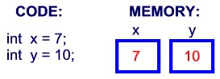

1、变量就是申请内存来存储值。也就是说，当创建变量的时候，需要在内存中申请空间。
内存管理系统根据变量的类型为变量分配存储空间，分配的空间只能用来储存该类型数据。

因此，通过定义不同类型的变量，可以在内存中储存整数、小数或者字符。
Java 的两大数据类型:
内置数据类型
引用数据类型
内置数据类型
Java语言提供了八种基本类型。六种数字类型（四个整数型，两个浮点型），一种字符类型，还有一种布尔型。
byte：
byte 数据类型是8位、有符号的，以二进制补码表示的整数；
最小值是 -128（-2^7）；
最大值是 127（2^7-1）；
默认值是 0；
byte 类型用在大型数组中节约空间，主要代替整数，因为 byte 变量占用的空间只有 int 类型的四分之一；
例子：byte a = 100，byte b = -50。
short：
short 数据类型是 16 位、有符号的以二进制补码表示的整数
最小值是 -32768（-2^15）；
最大值是 32767（2^15 - 1）；
Short 数据类型也可以像 byte 那样节省空间。一个short变量是int型变量所占空间的二分之一；
默认值是 0；
例子：short s = 1000，short r = -20000。
int：
int 数据类型是32位、有符号的以二进制补码表示的整数；
最小值是 -2,147,483,648（-2^31）；
最大值是 2,147,483,647（2^31 - 1）；
一般地整型变量默认为 int 类型；
默认值是 0 ；
例子：int a = 100000, int b = -200000。
long：
long 数据类型是 64 位、有符号的以二进制补码表示的整数；
最小值是 -9,223,372,036,854,775,808（-2^63）；
最大值是 9,223,372,036,854,775,807（2^63 -1）；
这种类型主要使用在需要比较大整数的系统上；
默认值是 0L；
例子： long a = 100000L，Long b = -200000L。
"L"理论上不分大小写，但是若写成"l"容易与数字"1"混淆，不容易分辩。所以最好大写。
float：
float 数据类型是单精度、32位、符合IEEE 754标准的浮点数；
float 在储存大型浮点数组的时候可节省内存空间；
默认值是 0.0f；
浮点数不能用来表示精确的值，如货币；
例子：float f1 = 234.5f。
double：
double 数据类型是双精度、64 位、符合IEEE 754标准的浮点数；
浮点数的默认类型为double类型；
double类型同样不能表示精确的值，如货币；
默认值是 0.0d；
例子：double d1 = 123.4。
boolean：
boolean数据类型表示一位的信息；
只有两个取值：true 和 false；
这种类型只作为一种标志来记录 true/false 情况；
默认值是 false；
例子：boolean one = true。
char：
char类型是一个单一的 16 位 Unicode 字符；
最小值是 \u0000（即为0）；
最大值是 \uffff（即为65,535）；
char 数据类型可以储存任何字符；
例子：char letter = 'A';。
实例
对于数值类型的基本类型的取值范围，我们无需强制去记忆，因为它们的值都已经以常量的形式定义在对应的包装类中了。请看下面的例子：
实例
public class PrimitiveTypeTest { public static void main(String[] args) { // byte System.out.println("基本类型：byte 二进制位数：" + Byte.SIZE); System.out.println("包装类：java.lang.Byte"); System.out.println("最小值：Byte.MIN_VALUE=" + Byte.MIN_VALUE); System.out.println("最大值：Byte.MAX_VALUE=" + Byte.MAX_VALUE); System.out.println(); // short System.out.println("基本类型：short 二进制位数：" + Short.SIZE); System.out.println("包装类：java.lang.Short"); System.out.println("最小值：Short.MIN_VALUE=" + Short.MIN_VALUE); System.out.println("最大值：Short.MAX_VALUE=" + Short.MAX_VALUE); System.out.println(); // int System.out.println("基本类型：int 二进制位数：" + Integer.SIZE); System.out.println("包装类：java.lang.Integer"); System.out.println("最小值：Integer.MIN_VALUE=" + Integer.MIN_VALUE); System.out.println("最大值：Integer.MAX_VALUE=" + Integer.MAX_VALUE); System.out.println(); // long System.out.println("基本类型：long 二进制位数：" + Long.SIZE); System.out.println("包装类：java.lang.Long"); System.out.println("最小值：Long.MIN_VALUE=" + Long.MIN_VALUE); System.out.println("最大值：Long.MAX_VALUE=" + Long.MAX_VALUE); System.out.println(); // float System.out.println("基本类型：float 二进制位数：" + Float.SIZE); System.out.println("包装类：java.lang.Float"); System.out.println("最小值：Float.MIN_VALUE=" + Float.MIN_VALUE); System.out.println("最大值：Float.MAX_VALUE=" + Float.MAX_VALUE); System.out.println(); // double System.out.println("基本类型：double 二进制位数：" + Double.SIZE); System.out.println("包装类：java.lang.Double"); System.out.println("最小值：Double.MIN_VALUE=" + Double.MIN_VALUE); System.out.println("最大值：Double.MAX_VALUE=" + Double.MAX_VALUE); System.out.println(); // char System.out.println("基本类型：char 二进制位数：" + Character.SIZE); System.out.println("包装类：java.lang.Character"); // 以数值形式而不是字符形式将Character.MIN_VALUE输出到控制台 System.out.println("最小值：Character.MIN_VALUE=" + (int) Character.MIN_VALUE); // 以数值形式而不是字符形式将Character.MAX_VALUE输出到控制台 System.out.println("最大值：Character.MAX_VALUE=" + (int) Character.MAX_VALUE); } }
编译以上代码输出结果如下所示：
基本类型：byte 二进制位数：8包装类：java.lang.Byte最小值：Byte.MIN_VALUE=-128最大值：Byte.MAX_VALUE=127
基本类型：short 二进制位数：16包装类：java.lang.Short最小值：Short.MIN_VALUE=-32768最大值：Short.MAX_VALUE=32767
基本类型：int 二进制位数：32包装类：java.lang.Integer最小值：Integer.MIN_VALUE=-2147483648最大值：Integer.MAX_VALUE=2147483647
基本类型：long 二进制位数：64包装类：java.lang.Long最小值：Long.MIN_VALUE=-9223372036854775808最大值：Long.MAX_VALUE=9223372036854775807
基本类型：float 二进制位数：32包装类：java.lang.Float最小值：Float.MIN_VALUE=1.4E-45最大值：Float.MAX_VALUE=3.4028235E38
基本类型：double 二进制位数：64包装类：java.lang.Double最小值：Double.MIN_VALUE=4.9E-324最大值：Double.MAX_VALUE=1.7976931348623157E308
基本类型：char 二进制位数：16包装类：java.lang.Character最小值：Character.MIN_VALUE=0最大值：Character.MAX_VALUE=65535
Float和Double的最小值和最大值都是以科学记数法的形式输出的，结尾的"E+数字"表示E之前的数字要乘以10的多少次方。比如3.14E3就是3.14 × 103 =3140，3.14E-3 就是 3.14 x 10-3 =0.00314。
实际上，JAVA中还存在另外一种基本类型 void，它也有对应的包装类 java.lang.Void，不过我们无法直接对它们进行操作。
类型默认值
下表列出了 Java 各个类型的默认值：
数据类型 | 默认值 |
byte | 0 |
short | 0 |
int | 0 |
long | 0L |
float | 0.0f |
double | 0.0d |
char | 'u0000' |
String (or any object) | null |
boolean | false |
实例
public class Test { static boolean bool; static byte by; static char ch; static double d; static float f; static int i; static long l; static short sh; static String str; public static void main(String[] args) { System.out.println("Bool :" + bool); System.out.println("Byte :" + by); System.out.println("Character:" + ch); System.out.println("Double :" + d); System.out.println("Float :" + f); System.out.println("Integer :" + i); System.out.println("Long :" + l); System.out.println("Short :" + sh); System.out.println("String :" + str); } }
实例输出结果为：
Bool :falseByte :0Character:Double :0.0Float :0.0Integer :0Long :0Short :0String :null
引用类型
在Java中，引用类型的变量非常类似于C/C++的指针。引用类型指向一个对象，指向对象的变量是引用变量。这些变量在声明时被指定为一个特定的类型，比如 Employee、Puppy 等。变量一旦声明后，类型就不能被改变了。
对象、数组都是引用数据类型。
所有引用类型的默认值都是null。
一个引用变量可以用来引用任何与之兼容的类型。
例子：Site site = new Site("Runoob")。
Java 常量
常量在程序运行时是不能被修改的。
在 Java 中使用 final 关键字来修饰常量，声明方式和变量类似：
final double PI = 3.1415927;
虽然常量名也可以用小写，但为了便于识别，通常使用大写字母表示常量。
字面量可以赋给任何内置类型的变量。例如：
byte a = 68;char a = 'A'
byte、int、long、和short都可以用十进制、16进制以及8进制的方式来表示。
当使用常量的时候，前缀 0 表示 8 进制，而前缀 0x 代表 16 进制, 例如：
int decimal = 100;int octal = 0144;int hexa = 0x64;
和其他语言一样，Java的字符串常量也是包含在两个引号之间的字符序列。下面是字符串型字面量的例子：
"Hello World""two\nlines""\"This is in quotes\""
字符串常量和字符常量都可以包含任何Unicode字符。例如：
char a = '\u0001';String a = "\u0001";
Java语言支持一些特殊的转义字符序列。
符号 | 字符含义 |
\n | 换行 (0x0a) |
\r | 回车 (0x0d) |
\f | 换页符(0x0c) |
\b | 退格 (0x08) |
\0 | 空字符 (0x0) |
\s | 空格 (0x20) |
\t | 制表符 |
\" | 双引号 |
\' | 单引号 |
\\ | 反斜杠 |
\ddd | 八进制字符 (ddd) |
\uxxxx | 16进制Unicode字符 (xxxx) |
自动类型转换
整型、实型（常量）、字符型数据可以混合运算。运算中，不同类型的数据先转化为同一类型，然后进行运算。
转换从低级到高级。
低 ------------------------------------> 高
byte,short,char—> int —> long—> float —> double
数据类型转换必须满足如下规则：
3. 在把容量大的类型转换为容量小的类型时必须使用强制类型转换。
4. 转换过程中可能导致溢出或损失精度，例如：
int i =128;
byte b = (byte)i;
因为 byte 类型是 8 位，最大值为127，所以当 int 强制转换为 byte 类型时，值 128 时候就会导致溢出。
5. 浮点数到整数的转换是通过舍弃小数得到，而不是四舍五入，例如：
(int)23.7 == 23;
(int)-45.89f == -45
自动类型转换
必须满足转换前的数据类型的位数要低于转换后的数据类型，例如: short数据类型的位数为16位，就可以自动转换位数为32的int类型，同样float数据类型的位数为32，可以自动转换为64位的double类型。
实例
public class ZiDongLeiZhuan{ public static void main(String[] args){ char c1='a';//定义一个char类型 int i1 = c1;//char自动类型转换为int System.out.println("char自动类型转换为int后的值等于"+i1); char c2 = 'A';//定义一个char类型 int i2 = c2+1;//char 类型和 int 类型计算 System.out.println("char类型和int计算后的值等于"+i2); } }
运行结果为:
char自动类型转换为int后的值等于97char类型和int计算后的值等于66
解析：c1 的值为字符 a ,查 ASCII 码表可知对应的 int 类型值为 97， A 对应值为 65，所以 i2=65+1=66。
强制类型转换
2. 格式：(type)value type是要强制类型转换后的数据类型 实例：
实例
public class QiangZhiZhuanHuan{ public static void main(String[] args){ int i1 = 123; byte b = (byte)i1;//强制类型转换为byte System.out.println("int强制类型转换为byte后的值等于"+b); } }
运行结果：
int强制类型转换为byte后的值等于123
隐含强制类型转换
2. 浮点型不存在这种情况，因为在定义 float 类型时必须在数字后面跟上 F 或者 f。